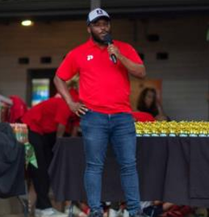

Soccer Coach - Juniors
I've had the privilege of guiding young players through both the challenges and rewards of the sport.
I've learned the importance of fostering respect, teamwork, and positive sportsmanship in every session, while focusing on drills that build both fundamental skills and confidence.
By tailoring my approach to each child's needs, I help them enjoy the game, develop their skills, and understand the value of hard work and mutual respect.
Westville Old Boys Football Club, 2024-present